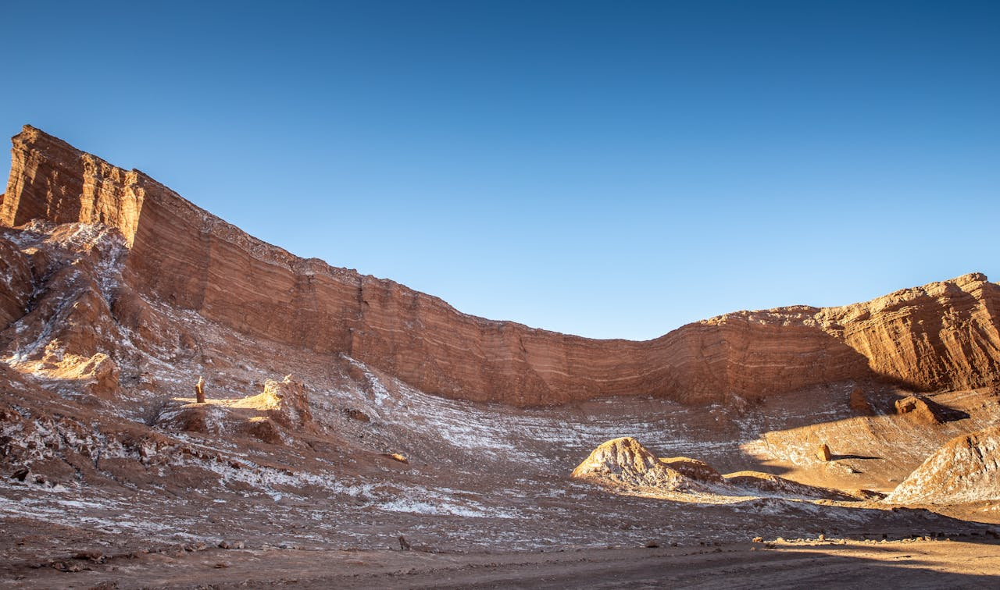
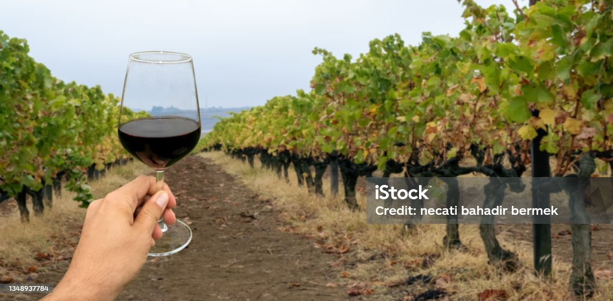
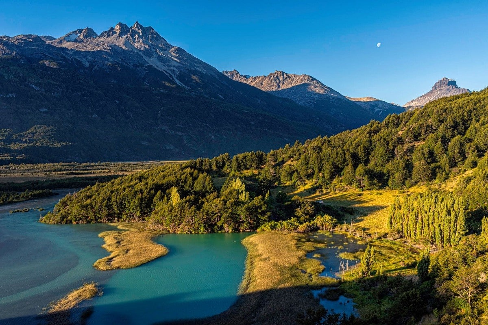
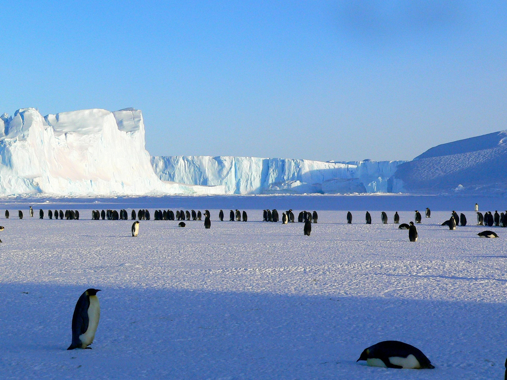

Destinos a elegir
Zona norte

El norte de Chile es una región llena de paisajes deslumbrantes y maravillas naturales que atraen a turistas de todo el mundo. Alberga el desierto de Atacama, uno de los lugares más áridos del planeta, donde se encuentra el Valle de la Luna, con formaciones rocosas y dunas únicas. También destacan el Salar de Atacama, hogar de flamencos rosados, y el Parque Nacional Lauca, con sus imponentes volcanes y lagunas altiplánicas como el lago Chungará.
San Pedro de Atacama es otro destino imperdible, especialmente para los amantes de la astronomía, gracias a su cielo despejado y bajo nivel de contaminación lumínica. La ciudad también sirve como base para explorar el área.
El norte de Chile ofrece una experiencia única, combinando la belleza de sus paisajes con la riqueza cultural de las comunidades indígenas locales. Una visita a esta región promete aventura y momentos inolvidables para todo tipo de viajero.
Zona Centro

La zona centro de Chile es un destino cautivador que combina el dinamismo de la ciudad con la tranquilidad de sus paisajes rurales y costeros. La Región Metropolitana, con Santiago como su capital, ofrece una vibrante escena cultural y gastronómica, con museos, teatros y restaurantes de clase mundial. Además, los Andes circundantes brindan oportunidades para esquiar y realizar actividades al aire libre.
Hacia el oeste, la Región de Valparaíso, conocida como la V Región, alberga las famosas viñas de vino. Los amantes del vino pueden recorrer los hermosos viñedos y disfrutar de catas de los renombrados vinos chilenos en el Valle de Casablanca y el Valle de San Antonio. Estos valles son famosos por sus vinos blancos y espumantes de alta calidad.
Además, Valparaíso, una ciudad portuaria declarada Patrimonio de la Humanidad por la UNESCO, ofrece un encanto bohemio con sus coloridas casas y empinadas calles. La zona centro de Chile es una región rica en cultura, historia y paisajes, ideal para explorar y disfrutar de experiencias inolvidables.
Zona Sur

La zona sur de Chile es conocida por sus impresionantes paisajes y rica biodiversidad. Desde los exuberantes bosques y montañas de la Región de Los Lagos hasta los majestuosos glaciares de la Patagonia, esta región es un paraíso para los amantes de la naturaleza.
Puerto Varas, en la Región de Los Lagos, es un destino destacado con su arquitectura de influencia alemana y vistas impresionantes del lago Llanquihue y el volcán Osorno. Los viajeros pueden explorar parques nacionales como Vicente Pérez Rosales, que ofrece senderos a través de bosques y cascadas.
Más al sur, la región de Aysén se caracteriza por sus fiordos, ríos y glaciares. La Carretera Austral es una ruta escénica que recorre esta zona, brindando acceso a maravillas naturales como el Parque Nacional Queulat y sus espectaculares paisajes.
La región de Magallanes y de la Antártica Chilena es el último rincón del mundo, con destinos icónicos como Punta Arenas y Torres del Paine. La zona sur de Chile ofrece aventuras inolvidables en un entorno único de belleza y serenidad.
Antartica

La Antártica es un destino remoto y cautivador que ofrece a los viajeros una experiencia única en un entorno prístino y salvaje. Los cruceros a esta región permiten a los visitantes explorar el continente blanco a bordo de barcos especialmente equipados para navegar entre el hielo.
Durante estas expediciones, los turistas pueden avistar impresionantes paisajes de glaciares y montañas cubiertas de nieve. Las costas antárticas albergan una rica fauna, incluyendo colonias de pingüinos de distintas especies, como el pingüino emperador y el pingüino adelaida. Además, es común avistar ballenas jorobadas y orcas que se alimentan en estas frías aguas.
Los visitantes también pueden desembarcar en algunos puntos seleccionados para caminar sobre la nieve y conocer de cerca la increíble vida silvestre. Las excursiones en zodiacs permiten acercarse a los majestuosos glaciares y observar la belleza de los icebergs flotantes.
Viajar a la Antártica es una oportunidad para conectar con la naturaleza en su máxima expresión y experimentar la grandeza de un ecosistema poco habitado por el ser humano. Es una aventura que deja una huella imborrable en quienes tienen la fortuna de vivirla.